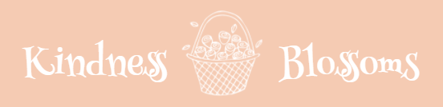

Overview
Purpose
Do you enjoy floral bouquets? Have you thought about creating your own floral arrangements? Not sure where to begin? Then this app is for you. You will learn to identify the flowers that are used in your favorite designs. You'll be able to select your favorite designs and save them for later.
Audience
The audience would be anyone who is interested in learning how to arrange flowers.
Data Sources
My floral design recipies will come from my personal notes taken during a floral design course.
External API
FloristOne API (API Key approval pending)
localStorage
LocalStorage will be used to store favorite flowers, arrangements, and recently viewed items.
localJSON file
LocalJSON file will be used to work with local storage.
Initial Module List
Favorites stored in localStorage.
More if needed.
Wireframes


Branding
Web App Logo
Style Guide
Color Palette
Palette URL: https://coolors.co/f5cbb3-9ea088-616a70-edbe7d| Primary | Secondary | Accent 1 | Accent 2 |
|---|---|---|---|
| [#f5cbb3] | [#9ea088] | [#616a70] | [#edbe7d] |
Typography
Heading Font: Libre Baskerville italic
Libre Baskerville italic looks elegant and works well with a clean white background.
Paragraph Font: Josefin Sans
Josefin Sans is clean, balanced and slender. The lower-case e is slanted which is interesting.
Normal paragraph example
Grow some flowers. Cut them, create an arrangement, and take them to someone who needs an extra measure of kindness. See how Kindness Blossoms.
Colored paragraph example
We are here to cheer you on and help you along the way. Click here to learn more about arranging flowers.